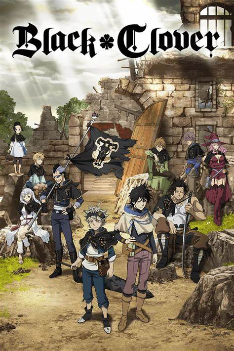

Hello, this is kainin and I am very bad at it
my favorite topic
Anime:
Ok first things first I love anime.Anime is what keeps my mental sanity.Whenever I am low I watch anime to get charged.why I like anime you may ask?
- Diverse Storytelling: Anime's wide range of genres and themes speaks to my heart, offering stories that resonate with my personal interests and emotions.
- Character Connection: I find myself becoming deeply attached to the well-developed characters in anime and enjoy witnessing their growth and development throughout the series.
- Artistic Appeal: The unique and visually stunning animation styles in anime captivate my senses, making it an artistic and visually pleasing form of entertainment.
- Cultural Exploration: Anime provides me with a fascinating glimpse into Japanese culture, traditions, and societal norms, which I find intriguing and enriching.
- Escapism: During challenging times, anime serves as a perfect escape, immersing me in fantastical worlds and allowing me to momentarily forget about my real-life worries.
- Community and Camaraderie: Being part of the anime community is a significant source of joy for me. Engaging with fellow fans, discussing favorite series, and attending conventions create a strong sense of camaraderie.
- Diversity of Genres: Anime's vast array of genres ensures that there is always something new and exciting to discover, keeping my interest alive.
my first anime
To be very fair my first anime was pokemon but I didn't knew it so my known first anime was Tokyo ghoul
I enjoyed it soo much that I started watching many more and slowly I became vetaran.
now I am at a point that I can tell you my to ten but sadly tokyoGhoul is not in it.
My top ten
dr. stone
this is a very good any if you are science student so go for it.one piece
see the thing is I didn't finish it thus it is in 9th maybr later it may move.jujutsu kaisen
this is really good one with great art cant deny it's may go up since it only has two season.mushoku tensei
if you ask me then i have to say this is peak isekai like no cap from art to story it is actually very good.one punch man
to be honest through out the anime world this is mc (saitama) is one of the strongest character it is gag Character so sometimes it gets comedic give it go you will like it.demon slayer
god what art work you wont believe with just few word you have to see it it is very unique it has a great character building with unfathomable story(I read manga so trust me).black clover

most underrated one.Obviously it has very good animation but is story telling is :- this is a story of boy in magic world where every one can use magic except him.He also wants to be wizard king so humilation rivals and problem of life are boud to have but his determination is what keep him.naruto
Naruto uzumaki now if you are already reading it you already know the emotions thing is this like telling how good you imginary crush is simply "Unexplainable" if some one doesn't watch naruto and he likes anime then it is like a sin for him.dragon ball z
Ok so this anime is all about fight scene just op like soo good it will give you a frrl of jhon wick art is extremely good and seriously enoungh content you will like it instantly. Goku meaning the mc do lose but he comes back strong also giving you lesson that no matter how much you fall you can get back up.(by the way goku is stronger than saitama).attack on titan
So you are here already wellcome this is my favorite for now. so let's start with artwork 11/10 you cannot say any thing bad about it.like best are i have seen in a while.Now lets go to story bro it will brak you and you will cry and bound to happen. With meaning that gives lifelesson betrayal,heartbreak,revenge,any many sad and dark thing.So watch it with heart filled with rock.(Unpopular oppinion but gabi is shit like sakura in naruto is trash)
Anime website :
so you want to watch anime here are few websites(free)
these 4 website will give you access to all to anime so enjoy